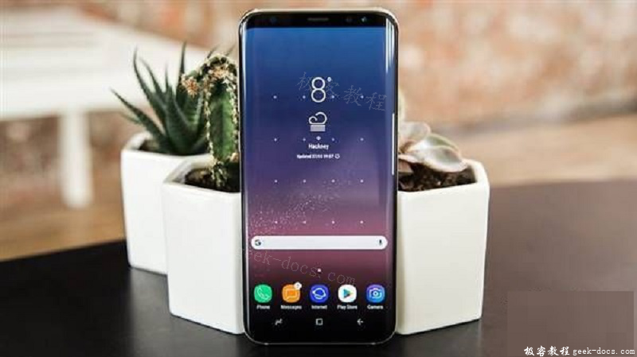

支持Vulkan的GPU，GPU最早由NVDIA于1999年提出，指的是专门为执行图形渲染所需的复杂计算而设计的专用处理器，其在图形渲染工作的效率要远高于通用设计目标的CPU。对于3D图形相关开发人员及游戏爱好者而言，GPU能力是衡量PC或移动设备性能的重要指标。本文简要介绍目前能够很好支持Vulkan的GPU。
移动端GPU的4大家族
Android 平台下，由于没有统一的硬件标准，导致各厂家各型号之智能手机，平板电脑的硬件配置大相径庭。目前应用在Android 移动平台的GPU主要有4家公司提供，分别为Imagination, ARM、高通和NVIDIA。下面简单介绍一下这些公司提供的支持 Vulkan 的 GPU。
PowerVR Rogue 系列
PowerVR Rogue 是由Imagination于2010年发布的 PowerVR 架构，支持 Vulkan 需要PowerVR 6 及更新的系列，具体情况如下：
- PowerVR Series7XT 系列是中高端图形处理器，主要型号有 PowerVR GT7200、PowerVR GT7400、PowerVR GT7600、PowerVR GT7800、PowerVT GT7900等。该系列可以选择2-16集群配置（64-512个 ALU 核心）。Series7XT 系列支持 HDR 渲染，4K纹理，物理着色等。
- Android 设备中使用了 PowerVR 架构 GPU 的代表性产品是魅族的 PRO7 Pluse。这款手机搭载了 Helio X30 处理器，集成了PowerVR 7XTP GPU。
- PowerVR 9XE/9XM系列大大提升了内存子系统的性能，支持32位寻址能力、增大突发传输数据位宽、提升内存访问效率、增强压缩能力，内存带宽可节约 25%。其关键特性还有分块延迟渲染、硬件虚拟化、OminiShield多域安全性、PVRIC3无损影像压缩等技术。
Mali 系列
Mali 系列 GPU 是 ARM 设计出品的，其中 Midgardl-4 可以全平台支持Vulkan API。目前主要型号为 Mali-G71、Mali-G72、Mali-T760、Mali-T820、Mali-T830、Mali-T860、Mali-T880等，具体情况如下:
- Mali-G71基于 Bifrost 架构，拥有非常强大的移动图像处理能力，大大降低了设计功率，以提高同等核心面积下的图形处理器。如下图，Galaxy S8 系列手机采用的就是 Mali-G71 图形处理器。
 - 相比 Mali-G71、Mali-G72 在性能、机器学习、VR这 3 方面做了优化，其性能是G71的 1.4 倍。Mali-G72 使用了称之为跟随脉冲的渲染技术，像素本地缓存的写入带宽最多可减少45%，大大降低 GPU 运算的负荷。
- Mali-T760 促进 Midgard 体系架构进入能源高效的新时代，完全支持当前和下一代图形和计算 API，其拥有惊人的图形和保证优秀的执行计算密集任务，比如计算摄影，手势识别以及图像稳定等先进技术。
- Mali-T800 系列的 GPU 任然基于 Midgard 架构，与 Mali-T600/T700 相比，重点优化了面积、能效，并增加了一些新的技术特征。如下图所示的Galaxy A7系列手机使用的就是 Mali-T830图像处理器。
Adreno 系列
Adreno 系列由高通推出，被广泛应用于高通的 Snapdragon(骁龙) 平台上。其中，高通 Adreno 400 和 Adreno 500 系列全平台支持Vulkan API。目前应用较为广泛3款Adreno系列GPU分别是 Adreno430、Adreno530、Adreno540。
- Adreno430 图形处理器是内嵌在高通骁龙 810 处理器之中，与用在骁龙 805 处理器中的上一代GPU产品 Adreno420 相比，在性能方面有 30% 的提升，并在功耗上有 20% 的下降。
- Adreno 530 与 Adreno430 相比功耗降低了 40%，而图形和计算性能提升了 40%。Adreno530 支持 64 位虚拟地址，允许共享虚拟内存(SVM)并高效地与 64 位 CPU 进行协处理，如下图所示的小米5采用的就是 Adreno 530 图形处理器。
- Adreno 540 与 Adreno 530 相比，将频率提高了 710MHZ，提升近 14% 的性能。再加上其他方面的各种优化。Adreno540 的性能比 Adreno530 提升达 25%。如下图所示，小米6搭载的骁龙 835 处理器集成了 Adreno 540 图形处理器。
GeForce ULV 系列
GeForce ULV 系列由 NVDIA 推出，被广泛应用于 Tegra 平台。目前支持Vulkan API的型号主要为Tegra x1等。从性能上来看，英伟达的 GeForce 系列图形芯片在整体上非常优秀，特别是在高清视频录制和视频播放及大型3D游戏方面有着卓越的表现。
Tegra X1是英伟达目前最先进的移动处理器，其拥有 256 个 NAVIDA Maxwell GPU核心和一颗 64 位 GPU，具备优异的 4K 视频功能和超越上一代产品的节能性。例如 NVDIA 推出的Shield系列游戏机及平板产品都是搭载的Tegra X1，而大名鼎鼎的任天堂Switch也是采用的Tegra X1改进版。
PC 端GPU中3大家族
与移动端GPU相比，PC端 GPU 最核心的差别在于性能设计不同。为了满足 PC 端计算需求更高的游戏或图形处理软件的要求，PC端 GPU 的性能较移动端 GPU 高出一大截。目前市场上的 PC 端GPU 主要有 NVDIA、AMD、Inter提供，具体情况如下：
NVIDA
NVIDA 是PC 端领域GPU提供商中的翘楚，目前市场上很多高性能游戏PC、图形处理工作站都是采用了其提供的 GPU。NVDIA GPU 对 Vulkan 的支持较为广泛，Kepler、Maxwell、Pascal的3代GPU中的大部分型号都可以良好地兼容 Vulkan API。下面介绍两个比较新系列的产品：
- NVDIA GeForce GTX 10 系列，包括GTX 1080 T1, GTX 1070 Ti, GTX 1070、GTX 1060、GTX 1050、Titan Xp等型号，采用全新的vPascalv架构，可应用于 4K HDR及之上的环境，带来无缝的电影级效果及卓越的PC游戏体验。
- NVDIA GeForce GTX 9 系列，包括 GTX 965， GTX 970， GTX 980， GTX 980Ti 等型号，采用 Maxwell 架构，并且使用了诸如 G-SYNC，GameStream，SL1等先进技术，能在1080P显示器上呈现 4k 画质的图像。
AMD
AMD 是一家专门为计算机，通信和消费电子行业设计和制造各种创新的微处理器(CPU、GPU、APU、主板芯片，电视芯片等)，以及提供闪存和低功率处理解决方案的公司。产品中基于次世代图形核心(GCN)架构的任何 AMD APU 或RadeonTM GPU现在均能良好适配Vulkan API。下面介绍产品中较新的几个系列：
- AMD Radeon R5/R7/R9 几个系列采用 GCN 结构，可为用户带来革命性的性能和图像质量，并且支持vulkan、DirectX 12、Mantle、OpenGL 4.4等新一代图形API。
- AMD Radeon 500 系列显卡采用第三代GCN结构，提供5个计算单元，最高核心频率1021 MHz，同样能够支持最新的几种图形API。
- AMD RADEON RX 系列显卡，包括 RX 480、RX 470、RX 470D、RX 460等几个子系列、均采用北极星(Polaris)架构，也能够适配Vulkan API.
Intel
Intel 是美国一家主要研制CPU处理器的公司，是全球最大的个人计算机零件和CPU制造商。目前市面上的Sky Lake和Kaby Lake系列处理器搭载的核显基本都可以适配Vulkan API，诸如常见的HD Graphics 510/515/520/530、Iris Graphics 540/550/580、HD610/630等。
极客教程相关文章推荐，欢迎阅读！
Vulkan RunTime Libraries
Vulkan Visual Studio环境配置
什么是 Vulkan
Vulkan和OpenGL区别